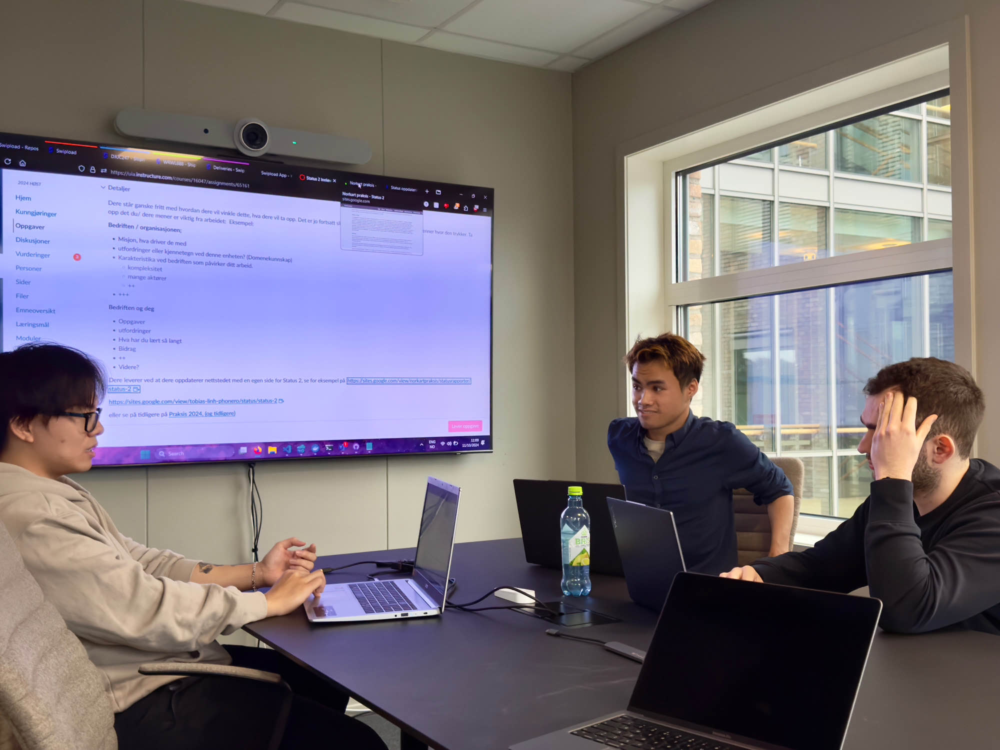
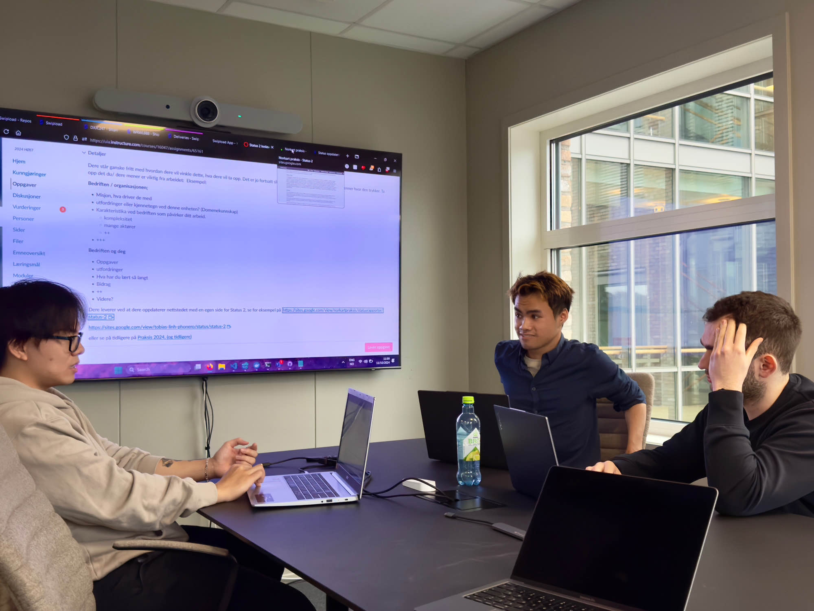

Swiploaders Status
Internship Update - Status 1
September 16, 2024

Hva har vi jobbet med så langt?
Tre uker har nå gått siden vi startet vårt internship hos Swipload, og det har vært en innholdsrik periode full av læring og spennende utfordringer. Swipload er en programvare for fraktstyring som gjør det mulig for sjåfører å administrere og spore fraktordrer via telefonen sin. Her er en oppdatering om hva vi har jobbet med, våre hovedoppgaver, og hva vi ser frem til i de kommende ukene!
Introduksjon til prosjektet
Hovedfokuset i praksisperioden har vært utviklingen av "Driver View" for mobilversjonen av Swipload-appen. Denne funksjonen gir sjåførene en effektiv måte å håndtere fraktordrer på, fra godkjenning av frakt til signering ved henting. Vi har fått en grundig innsikt i hvordan det er å jobbe med profesjonell programvareutvikling, både teknisk og samarbeidende. Med veiledning fra erfarne utviklere som Eyvind, har vi fått en solid forståelse av verktøyene som brukes, som Docker, Azure DevOps og Figma for UI-design.
Vi er en gruppe studenter som jobber sammen: Nhan Thomas Nguyen (22), Tony Nguyen Le (22), Nicoleta Pavelescu (20) og Ajdin Smajic (23). For øyeblikket jobber vi med forskjellige aspekter av prosjektet. Thomas og Nicoleta fokuserer på carousel-funksjonen for "Todo"-siden, mens vi andre arbeider med "Todo"-siden og "Approve"-siden. Vi har delt oppgavene slik at to og to jobber sammen for å finne den beste fremgangsmåten og dele erfaringer med hverandre.
Hovedoppgaver
Frontend-arbeid: Vi har implementert design fra Figma til fungerende UI, med særlig fokus på å utvikle dynamiske sider og navigasjonselementer.
Backend-integrasjon: Vi har begynt å koble knapper som "Approve" og "Decline" til backend-funksjonalitet, slik at statusen for shipment-ordrer kan oppdateres i sanntid.
Samarbeid og erfaringsutveksling: Vi har hatt kodegjennomganger og problemløsing i teamet, noe som har forbedret våre ferdigheter i både frontend og backend utvikling.
Veien Videre
De kommende ukene ser vi frem til å fortsette med integrasjonen mellom frontend og backend, samt forberede systemet for beta-testing av sjåfører som skal bruke den nye "Driver View". Vi vil også jobbe videre med å forbedre gjenbrukbare komponenter og sikre at design og funksjonalitet samsvarer med brukernes behov. Alt i alt har praksisperioden vært svært lærerik så langt, og vi gleder oss til å fortsette utviklingen!
Hold deg oppdatert for flere spennende nyheter i ukene som kommer!
Internship Update - Status 2
Oktober 18, 2024
 

Bedrift
[Content Placeholder]
Arbeidet så langt
Siden vår forrige oppdatering har vi gjort betydelige fremskritt i
utviklingen av "Driver View" for mobilversjonen av Swipload-appen.
Vi har hatt fokus på å integrere frontend- og
backend-funksjonalitet, noe som har sikret at appen oppdaterer
ordrestatus i sanntid. Dette var en viktig milepæl som markerer at
vi nå har en sømløs flyt mellom brukergrensesnitt og systemets
backend.
Vi har også jobbet tett med våre veiledere, som har hjulpet oss med
å strukturere prosjektet på en mer effektiv måte. Ved å bryte ned
koden i mindre komponenter har vi sikret at løsningen blir mer
modulær og lett å vedlikeholde. Dette har gjort prosjektet mer
oversiktlig og enklere å videreutvikle, samtidig som vi har
forbedret våre arbeidsvaner rundt kodeskriving og bruk av verktøy
for versjonskontroll.
Samarbeidet i teamet har vært en viktig del av prosessen. Gjennom
regelmessige møter og kodegjennomganger har vi fått nyttige
tilbakemeldinger og løst utfordringer sammen. Dette har styrket vår
forståelse av hvordan profesjonelle utviklingsteam arbeider, og vi
har også fått verdifulle råd om hvordan vi kan forbedre kvaliteten
på koden vår.
Veien videre
I løpet av vår tid med Swipload har vi jobbet mye med vår oppdrag,
og har blitt kjent med systemet og hvordan det fungerer. Vi har også
blitt informert at dersom vi når et stabilt punkt i prosjektet, vil
den bli implementert i bedriftens produksjon og testet. Vi er ivrige
på å se hvordan vårt arbeid vil bli brukt, og hva resultatet fra
testene vil bli.
Gruppen har nå vært hos Swipload i snart 3 månder. For resten av
praksisperioden skal vi fortsette med å utvikle "driver"
funksjonaliteten videre. Siden vi nærmer oss målet med å få på plass
funksjonaliteten, vil vi fortsette med å fin pusse modulene og
forbedre funksjonaliteten slik at det møter opp med bedriftens
standard.